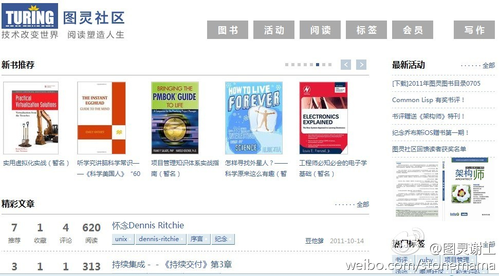

Ada李力
2011-10-19

Ada李力
2011-10-19
姣姣帮我做家务或者给我锤背，每次挣一元两元的，她不要现金，说先存到我这里。但她记帐，每次翻她那个小账本时，就很得意地提醒我还欠她多少钱。她提我欠她八块钱欠钱这事儿就有七八回，还是当债主的感觉比较好。
Ada李力
2011-10-19
姣姣说爸爸也欠她钱，欠十一块钱。怎么从明俊那里挣的呢？明俊规定她完成某件事情的时间，比如早上吃饭规定十五分钟，姣姣要是十分钟吃完，提前的五分钟就可以兑换成五块钱。
Ada李力
2011-10-19
喜欢这个界面。
@谢工在图灵和GitChat:
图灵社区首页上线了 网页链接，我向大家隆重推荐。图灵成立六年了，一直想有个自己的社区，大家可以写书、译书、评书、推荐书，与作者译者读者编辑互动答疑交流，浏览各种好文章，推荐好的作品，开放出版流程，让大家参与到其中。来吧，响应一下我们的口号：让技术改变世界，阅读塑造人生。
网页链接，我向大家隆重推荐。图灵成立六年了，一直想有个自己的社区，大家可以写书、译书、评书、推荐书，与作者译者读者编辑互动答疑交流，浏览各种好文章，推荐好的作品，开放出版流程，让大家参与到其中。来吧，响应一下我们的口号：让技术改变世界，阅读塑造人生。
- 